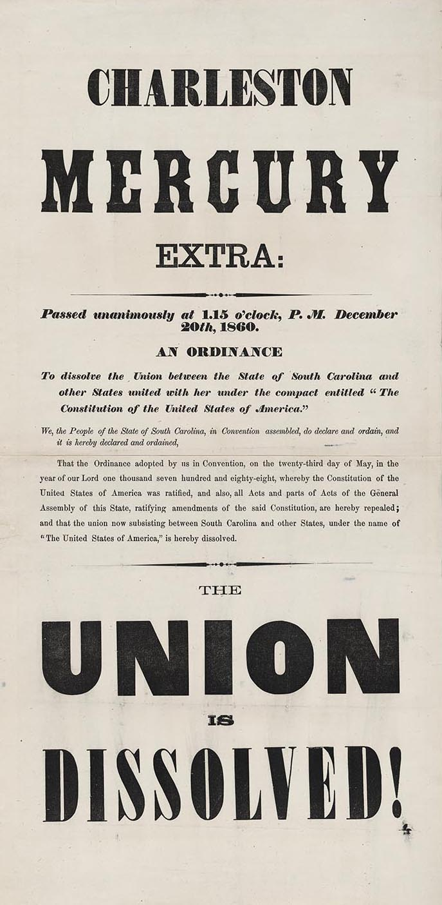
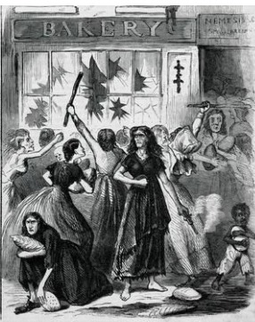
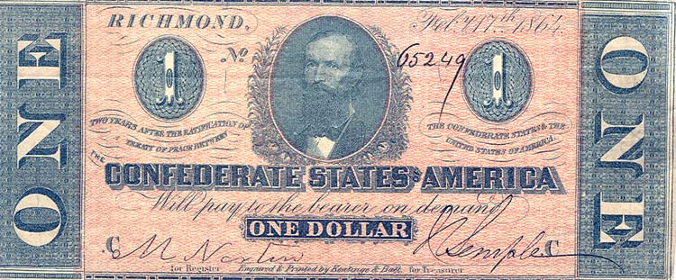

|
The Confederate States of America was established under a
constitution signed on March 11, 1861. The new republic
consisted of the Deep South states of Alabama, Florida,
Georgia, Louisiana, Mississippi, South Carolina, and Texas.
The number of Confederate states eventually grew to eleven
when Arkansas, North Carolina, Tennessee, and Virginia left
the Union following Abraham Lincoln's post-Fort Sumter call
for 75,000 volunteers to suppress the southern rebellion.
Four years of civil war failed to secure Confederate
independence, and the nation ceased to exist after the
surrender of its principal armies in April and May of 1865.
Abraham Lincoln's election on the Republican presidential
ticket in 1860 caused many white southerners to fear for the
future of their slave-based society and provided the trigger
|

The secession of South Carolina in December 1860 was
the first step toward the formation of the Confederate States of America.
|
for South Carolina's secession convention. On December 20,
1860, South Carolina's 169 convention delegates voted
unanimously to leave the Union. Similar conventions soon met
in the other states of the lower South. By February 1, 1861
the first wave of secession was completed.
Forming the Nation
Delegates from the seceded states met in Montgomery,
Alabama, during the first week of February 1861. Moderates
controlled the convention and quickly drafted a provisional,
or temporary, constitution closely modeled on the U.S.
Constitution. Jefferson Davis of Mississippi, a moderate
secessionist, and Alexander H. Stephens of Georgia, who had
been opposed to secession, were chosen as president and vice
president. The delegates in Montgomery, selected by their
respective state conventions rather than in popular
elections, converted themselves into the new nation's
unicameral Congress. Together with Davis and Stephens,
members of the Congress would serve until national elections
could be held in November 1861. Congress also set up
executive departments similar to those in the United States,
as well as a postal system, and other elements of a national
government.
The Davis administration soon faced a crisis at Fort
Sumter in Charleston, South Carolina. Under increasing
pressure to assert Confederate nationality, Davis ordered
southern forces to bombard and seize the United States last
remaining Southern fort during the second week of April,
1861. Abraham Lincoln responded to the loss of Sumter by
issuing a call for 75,000 volunteers to suppress the
rebellion. That threat convinced four more slave states,
Virginia, Arkansas, North Carolina, and Tennessee, to secede
from the Union. The slave states of Missouri, Kentucky,
Maryland, and Delaware remained loyal to the Union, although
some of their citizens were active in support of the
Confederacy.
The Confederate government operated under a temporary
constitution for one month. The permanent constitution,
written and approved by the Montgomery delegates, generally
followed the U.S. Constitution except for a few important
differences. The Confederate Constitution limited national
power and stressed state rights. Most importantly, it
protected slavery in the states and all territories. The new
document's preamble affirmed that each Confederate state
acted "in its sovereign and independent character." The
first twelve amendments to the U.S. Constitution appeared in
the body of the Confederate version. The Confederate
constitution created a national executive and bicameral
legislature very similar to those of the United States,
although it departed from the U.S. model in limiting the
president to one six-year term.
The Confederate executive department included President
Davis, Vice President Stephens, and the cabinet secretaries
of state, war, the navy, and the treasury, a postmaster

Confederate President Jefferson Davis,
a West Point graduate, Mexican-American War veteran, and
former U.S. Senator and Secretary of State
|
general, and an attorney general. The brilliant Judah P.
Benjamin served as attorney general, secretary of state, and
secretary of war at different times. Stephen R. Mallory
worked at the head of the Navy Department and John H. Reagan
was postmaster general. George Wythe Randolph and James A.
Seddon stood out as the most important among several men to
hold the post of secretary of war, while Christopher G.
Memminger directed affairs at the Treasury Department for
more than three years. Cabinet members faced huge problems
as they sought to plan and pay for war while also overseeing
day-to-day governmental operations.
Richmond, Virginia replaced Montgomery as the capital of
the Confederacy in 1861, and became the nation's most
visible geographic symbol. The move was made because was the
capital of Virginia, the most populous Confederate state,
and also the leading manufacturing center in the South. The
first permanent Congress convened in Richmond on February
18, 1862. Elected by voting-age white male citizens the
preceding November, congressmen and senators had not run on
specific political party tickets, like the Democratic or
Republican parties of the North. The Confederacy
deliberately sought to avoid partisan politics. Although
parties never developed, bitter divisions soon arose between
Congressional supporters and opponents of Jefferson Davis
and his policies.
The Difficulties of Waging War
The burden of conducting a protracted war against a
powerful opponent placed enormous strains on Confederate
society. Well before the end of the conflict, the South
underwent changes and confronted challenges no one could
have anticipated in 1861. Moreover, the Davis government
passed laws and regulations that conflicted with the state
rights philosophy so often associated with the Confederacy.
Still, the Confederacy held some advantages over the North.
It sought to win independence and could achieve that by
defending itself and persuading the northern people that the
effort to restore the Union would be too expensive in lives
and money. The North, in contrast, had to invade the
Confederacy, destroy its capacity to make war, and crush the
southern people's will. Many Confederates looked to the
American Revolution as proof that a weaker power could
defeat a more powerful foe. They expected the great size of
the Confederacy and a the unity of its people to be crucial
factors in bringing southern victory.
First, the nation needed soldiers. Hundreds of thousands
of men volunteered for Confederate service in 1861, after
which the rate of enlistment drastically declined. The
Conscription Act of 1862 made all white males between the
ages of 18 and 35 eligible for service but exempted men in
several occupations deemed essential to the war effort (the
most controversial exemption allowed one white man on each
plantation with twenty slaves or more to avoid service).
Later acts extended the age limits to 18 and 45 and then to
17 and 50 and modified the roster of exemptions. Until
December of 1863, any man drafted could pay a substitute to
serve for him. The conscription acts were designed to
promote volunteering rather than to draft men directly, and
they generally worked well. Severe manpower shortages caused
Congress to approve the enrollment of slaves into the
Confederate army very late in the war, but the legislation
came too late to have any impact on the war.
Confederate Diplomacy
Both the Davis and Lincoln governments understood that
French aid had tipped the balance in favor of the colonists
during the American Revolution. Confederate diplomatic
efforts therefore concentrated on achieving recognition from
Great Britain or France. Initial hopes rested on the belief
that by withholding cotton exports the Confederacy could
produce such economic hardship among British textile
manufacturers and their employees that the London government
would intervene to assure a steady flow of cotton. Among
other things, such intervention likely would bring the Royal
Navy into conflict with the United States naval blockade of
the Confederacy. But "King Cotton" diplomacy failed
miserably because Britain had a surplus of cotton on hand in
1861, rapidly developed new sources of cotton in India and
Egypt, and saw increased production in arms manufacturing
|

The Richmond Bread Riots of 1863 were a stark
reminder of the suffering taking place on the Confederate homefront.
|
and other areas boost employment when textile production
lagged in the summer and fall of 1862.
During the war, the Confederacy suffered immense economic
dislocation. Much of the problem was due to the fact that
the antebellum southern economy was not prepared to wage
war. With most capital tied up in land and slaves, the
Confederacy struggled to pay for its war effort. The Davis
administration relied on three sources of income: taxes that
raised about 5 percent of revenues, bond that raised another
35 percent, and paper treasury notes that raised the
remaining 60 percent. This overproduction of paper money
helped fuel inflation that eventually reached 9,000 percent.
Shortages of goods contributed to inflation, as the Union
blockade limited trade with Europe. Union military successes
throughout the war also played a role in disrupting
industrial and agricultural production and transportation
networks.
Richmond adjusted to growing economic problems with a
number of measures, such as impressment. Impressment was the
seizing of goods by the national government - food, supplies
and slaves - for the war effort. Impressment caused
considerable dissension, but also provided invaluable
war-related goods that helped keep the Confederate armies in
the field.
The Confederacy registered impressive accomplishments in
the area of war industry as well. The government created the
largest powder works in North America at Augusta, Georgia,
and established arsenals and iron works in Richmond,
Charleston, Selma, Alabama, and elsewhere. During 1863,
war-related industries in Selma employed more than 10,000
people. No Confederate army ever lost a battle because it
lacked weapons, ammunition, or other material.
Internal Political Tensions
The demands of fighting a war created serious political
tensions in the Confederacy. In the absence of formal
parties through which disagreements could be expressed,
Confederate political opinion divided into pro- and
anti-Jefferson Davis factions. Davis and military figures
such as Robert E. Lee insisted that winning the war should
take precedence over everything else. Other political
figures insisted that the central government must protect
essential state and individual rights, even if doing so
hindered the Confederate war effort. Relations between Davis
and the national Congress were tense. Disagreement over
conscription, the suspension of habeas corpus, and policies
that promoted economic centralization divided the leadership
of the Confederacy. Congressional critics blasted Davis as a
dictator, and warned that winning independence would be
worthless unless the values that made the new nation
distinctive were preserved.
Vice President Stephens broke with Davis in 1862 over
conscription and other issues, becoming another outspoken
critic. Governors such as Joseph E. Brown of Georgia and
Zebulon Vance of North Carolina deliberately withheld
supplies from the government, and flaunted or circumvented
national laws. Despite great opposition, President Davis
worked extremely hard, set an example of selfless service,
and created and sustained a national army and government. At
the same time, Davis' inability to delegate military
responsibilities hurt the war effort. In addition, Davis
was not an eloquent public speaker and failed to inspire
public faith in the southern cause. For that, the nation
turned to General Robert E. Lee and the Army of Northern
Virginia. Victories over the Union's Army of the Potomac
helped to maintain the Confederacy after public support of
Davis's government died. As the war continued, the southern
government suffered from divisions that prevented the most
effective use of limited resources. Many historians argue
that the Confederacy's inability to resolve the
|

A Confederate "blueback" note. Overprinting of currency
during the war led to runaway inflation in the South.
|
contradiction of nationalism versus states' rights and
individualism caused the ultimate defeat of the South.
Military losses, particularly during and after the summer
of 1863, along with inflation, scarcity of goods, and loss
of loved ones led to dissent and disaffection behind the
lines. Desertion from southern armies escalated dramatically
during the winter of 1864-65. In early April of 1865, Robert
E. Lee and the Army of Northern Virginia abandoned Richmond.
On April 9, Lee surrendered to Ulysses S. Grant at
Appomattox Court House. Appomattox marked the end of the war
for most Confederates, though additional surrenders of large
forces would take place over the next month. Jefferson
Davis, who fled southward with part of his cabinet just
before the fall of Richmond, was captured on May 10 near
Irwinville, Georgia.
The South paid a high price for its rebellion. Nearly
260,000 Confederate soldiers died from wounds or disease and
another 200,000 were wounded in combat. Two-thirds of the
region's assessed wealth was destroyed. Approximately 40
percent of all southern livestock perished. Much of the
infrastructure of the region-banks, factories, railroads,
bridges, levies, and the like--lay in ruins. One comparative
figure is especially revealing. Between 1860 and 1870,
northern wealth increased by 50 percent while southern
wealth decreased by 60 percent.
The Confederate States of America failed because of
internal dissent and military defeat. No other white group
in United States history suffered the kind of catastrophe
that was the fate of white Southerners. This regionally
distinctive legacy has been, and continues to be, explored
in literature, song, political culture and symbols, such as
the conflict over the Confederate battle flag.
Source: Joan Waugh, ed., Facts on File Encyclopedia of American
History: Civil War and Reconstruction, 1856 to 1869 (New York: Facts on
File, 2003), 75-78.
|